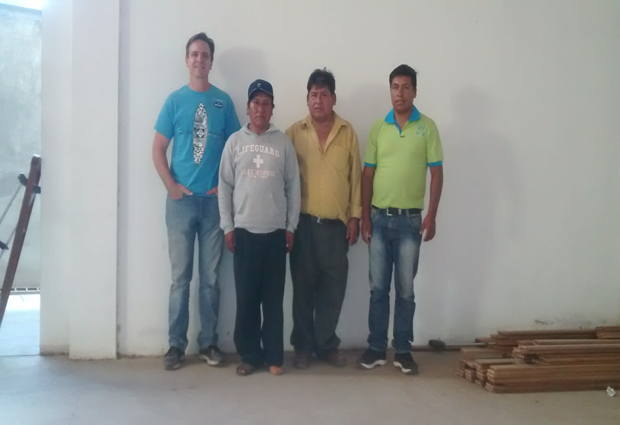

As in many cases in poor, rural villages in Bolivia, the lack of medical care can often lead to catastrophe for those living there. The rural province of Tapacari, in the Cochabamba Department of Bolivia, is one such place. It is among one of the poorest in the department and has no access to medical care. Alejandro has lived and worked there as a farmer most of his life. When a cut on his leg was left untreated, it became infected and Alejandro tried to care for it himself. When the infection spread, he travelled to the nearest medical center where they treated the wound and stopped the infection. Over the course of a year, however, the scenario would repeat itself several times with the infection returning after being treated. Finally, the infection became so bad that it turned to a blood infection. Doctors immediately removed his leg below the knee to save his life.
Now unable to work and support his young family, his wife had to take over his responsibilities in the fields, leaving Alejandro in charge of the kids at home. For two years, he was tending to his children while on crutches and watching his wife do his work. Soon he became depressed and felt that he was a burden to his family.
The mayor of Alejandro’s village just happened to be attending a Mano a Mano event, where they were handing out medical supplies as well as presenting the work of our clinic, Filadelfia Center for Prosthetics, to those in attendance. The mayor made arrangements to bring Alejandro to our clinic in Cochabamba. Two days later they both made the 4-hour trip and we started the process of making a prosthesis for him.
After a few days, Alejandro returned to his village a happy and changed man. Now walking without crutches for the first time in two years, he has shown such determination and is back to work, providing for his family and sensing that hope was restored for him and his family.
{kind=link}
{kind=link}
{kind=link}
{kind=link}